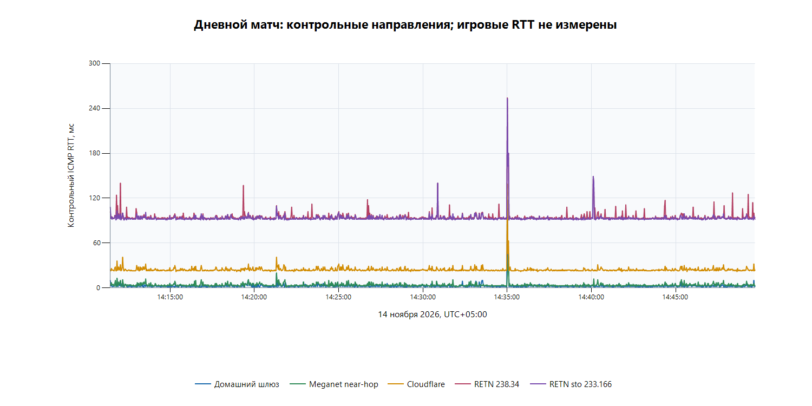
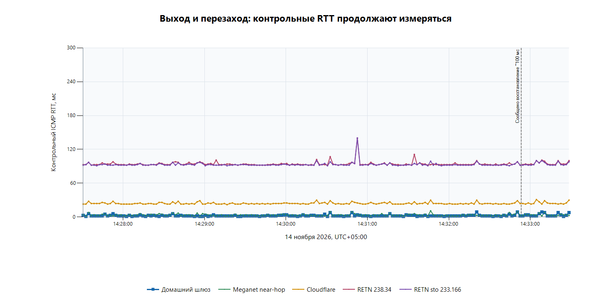
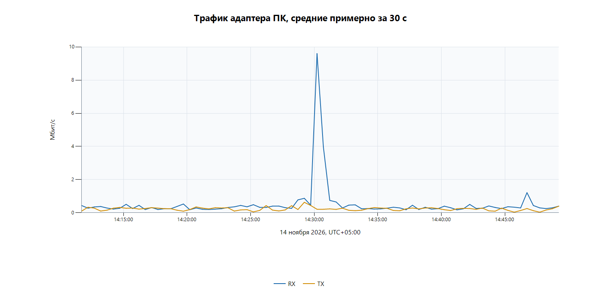
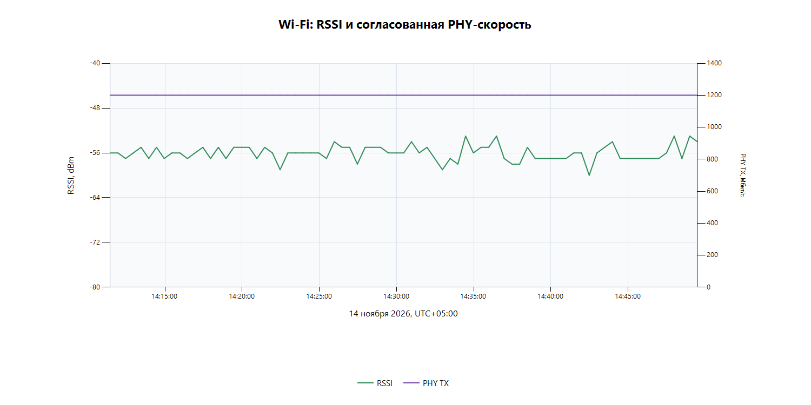

Рейтинговый Stockholm выбран игроком. Дневной сбор 14:11:26.498–14:49:44.196 (+05:00), 1149 циклов и 5745 успешных контрольных ICMP-проб. Причина игрового RTT и источник игровых потерь не установлены.
| Цель | n | min | median | avg | p95 | max, мс | ICMP неответы |
|---|---|---|---|---|---|---|---|
| 192.168.123.1 | 1149 | 1.0 | 2.0 | 2.747 | 6.0 | 118.0 | 0 |
| 89.38.164.205 | 1149 | 2.0 | 3.0 | 3.976 | 8.0 | 43.0 | 0 |
| 1.1.1.1 | 1149 | 22.0 | 24.0 | 24.425 | 28.0 | 139.0 | 0 |
| 87.245.238.34 | 1149 | 91.0 | 93.0 | 94.822 | 100.0 | 254.0 | 0 |
| 87.245.233.166 | 1149 | 91.0 | 92.0 | 93.386 | 97.0 | 253.0 | 0 |

Пороговые классы: 1122 цикла ниже всех порогов, 22 с превышением только RETN, 1 публичный без локального порога, 4 локальных. Пороги 15/16/38/109/106 мс, порядок целей как в таблице. Эти классы не измеряют длительность игровой деградации и потери.
Исходный игровой диапазон 89–95 мс сообщён игроком. Затем повторные колебания, ретроспективный порядок 95→120→180→120. В плотном окне F8/F9 14:19:15.263–14:22:15.150 по 90 проб на цель; медианы 2/4/24/94/93 мс, максимумы 19/20/41/137/109. Максимумы могли возникнуть в разные циклы.
Новая серия F8 начинается 14:27:50.587. В 14:29:10.353 внесено сообщение о продолжающихся 300–400 мс; позднее длительность оценена примерно в пять минут. Начало и конец этой фазы точно не измерены. Численные игровые потери в дневном матче не сообщены.
Полезное короткое окно контроля: 14:29:10.353–14:29:58.079 (+05:00), после сообщения и до последнего снимка прежнего игрового процесса:
| Цель | n | min | median | avg | p95 | max, мс | ICMP неответы |
|---|---|---|---|---|---|---|---|
| 192.168.123.1 | 24 | 1.0 | 2.0 | 2.042 | 3.0 | 3.0 | 0 |
| 89.38.164.205 | 24 | 2.0 | 3.0 | 3.292 | 5.0 | 5.0 | 0 |
| 1.1.1.1 | 24 | 22.0 | 24.0 | 23.583 | 25.0 | 25.0 | 0 |
| 87.245.238.34 | 24 | 92.0 | 93.0 | 93.083 | 94.0 | 95.0 | 0 |
| 87.245.233.166 | 24 | 91.0 | 92.0 | 92.25 | 93.0 | 93.0 | 0 |

Это существенное расхождение между сообщённым игровым RTT и контрольными направлениями в близком окне. Оно не поддерживает объяснение всей фазы длительным одинаковым ростом задержки на всех измеренных направлениях. Контроли не адресованы игровому peer: специфический игровой маршрут, обратное направление, UDP-очереди, а также клиент/сервер остаются возможными объяснениями. Виновная сторона не установлена.
Игрок самостоятельно вышел и вернулся. Старый процесс присутствовал в снимке 14:29:58, отсутствовал 14:30:28/58; новый обнаружен 14:31:28. Это дискретные снимки раз в ~30 секунд. Монитор продолжал работу.
До выхода штатные игровые записи содержат 185.40.64.1:7004; после — 162.249.72.1:7004, включая GameNetDriver/RemoteAddr. В 14:32:53.416 внесено сообщение ~100 мс, в 14:42:38.073 — стабильные 100–110 мс. После матча игрок связал поздние F8 с 120–130 мс. Безопасное сравнение адресов.
Совпадение смены адреса и восстановления — зацепка для проверки. Перезапуск одновременно меняет состояние клиента, поэтому это не причинный A/B и не доказательство смены физического сервера, транзита или неисправности Meganet.
В 14:35:00.503 контрольные RTT составили 118/16/139/254/253 мс; следующие два цикла 25/26/46/163/163 и 41/43/63/180/180. Уже шлюз ответил медленнее, но этот краткий эпизод после восстановления не объясняет прежние пять минут 300–400. Рядом нет F8 и численного игрового RTT.
77 системных снимков: Wi-Fi connected, 5 ГГц, канал 36, RSSI −60…−53 dBm; один наблюдаемый AP и один вариант выбранных контрольных маршрутов. Максимальные средние RX/TX за ~30 с — 9.599/0.634 Мбит/с. Отсутствие длительного насыщения самим ПК не исключает микровсплесков, других устройств, retries или очередей.


Хронология, сырые пробы CSV, метрики окон. Числа в отчёте пересчитаны по экспортированным пробам; все показатели совпали с сохранённым анализом.